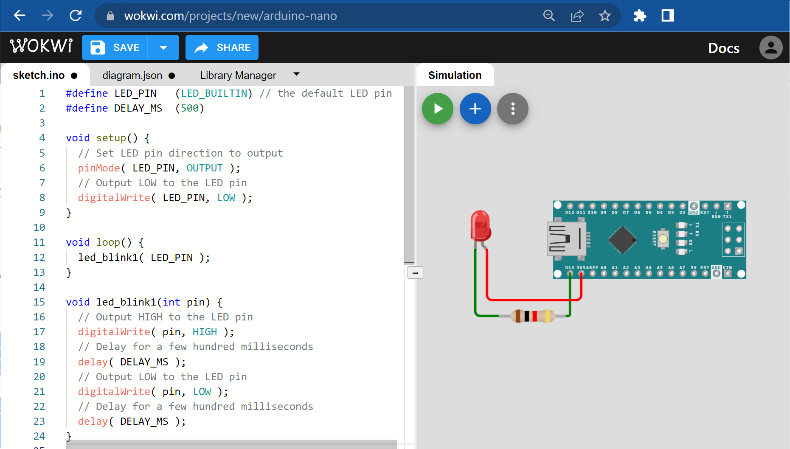
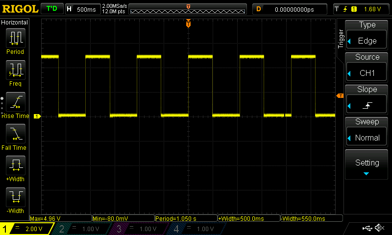
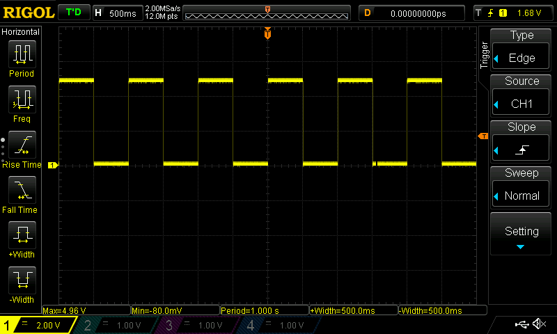

การเขียนโค้ด Arduino สำหรับ LED Blink ด้วยวิธีที่แตกต่างกัน#
บทความนี้นำเสนอตัวอย่างการเขียนโค้ด Arduino Sketch เพื่อทำให้ LED บนบอร์ดไมโครคอนโทรลเลอร์ Arduino Uno / Nano กระพริบด้วยอัตราคงที่ โดยใช้วิธีที่แตกต่างกันมากกว่าหนึ่งวิธี โค้ดตัวอย่างในบทความนี้สามารถนำไปทดลองได้กับ WokWi Simulator เพื่อจำลองการทำงานเสมือนจริง และ Arduino IDE เพื่อนำไปอัปโหลดไปยังบอร์ดไมโครคอนโทรลเลอร์
Keywords: Arduino Nano / Uno, Arduino Sketch, LED Blink, WokWi Simulator
▷ ตัวอย่างที่ 1#
โค้ดตัวอย่างแรกเริ่มต้นด้วยการสร้างฟังก์ชัน setup() ที่มีการกำหนดให้ขา LED_PIN
ซึ่งตรงกับ LED_BUILTIN เป็นเอาต์พุตแบบดิจิทัล และเขียนค่าเอาต์พุตให้เป็น LOW
โดยใช้คำสั่ง digitalWrite( LED_PIN, LOW );
ถัดไปเป็นฟังก์ชัน loop() ซึ่งจะถูกเรียกให้ทำงานซ้ำโดยอัตโนมัติ
ภายในมีคำสั่งที่เรียกฟังก์ชัน led_blink1( LED_PIN );
ในส่วนของการสร้างฟังก์ชัน void led_blink1( int pin ) { ... }
มีการทำคำสั่ง digitalWrite(...);
เพื่อกำหนดสถานะลอจิก HIGH หรือ LOW ของขาที่ระบุโดยตัวแปรหรืออาร์กิวเมนต์ชื่อ pin และคำสั่ง delay( DELAY_MS );
เพื่อการหน่วงเวลาไว้เท่ากับค่าตัวเลขของ DELAY_MS ก่อนทำคำสั่งต่อไปตามลำดับ
#define LED_PIN (LED_BUILTIN) // the default LED pin
#define DELAY_MS (500)
void setup() {
// Set the LED pin direction to output
pinMode( LED_PIN, OUTPUT );
// Output LOW to the LED pin
digitalWrite( LED_PIN, LOW );
}
void loop() {
led_blink1( LED_PIN );
}
void led_blink1( int pin ) {
// Output HIGH to the LED pin
digitalWrite( pin, HIGH );
// Delay for a few hundred milliseconds
delay( DELAY_MS );
// Output LOW to the LED pin
digitalWrite( pin, LOW );
// Delay for a few hundred milliseconds
delay( DELAY_MS );
}

รูป: ตัวอย่างการจำลองการทำงานของโค้ดโดยใช้ WokWi Simulator
▷ ตัวอย่างที่ 2#
ในโค้ดตัวอย่างนี้ มีการสร้างฟังก์ชันและเรียกใช้ led_blink2(...) มาแทนที่และเปรียบเทียบกับฟังก์ชัน led_blink1(...) ในตัวอย่างแรก
แต่มีรูปแบบการเขียนโค้ดที่แตกต่างกัน ซึ่งมีการประกาศและใช้งานตัวแปรภายในฟังก์ชันและเป็นแบบ static ที่มีชื่อว่า state
เพื่อใช้กำหนดสถานะลอจิกของขาเอาต์พุต LED_PIN
ตัวแปร state จะถูกสร้างขึ้นให้มีค่าเริ่มต้นเป็น 0 และสามารถเก็บค่าในหน่วยความจำได้เมื่อจบการทำงานของฟังก์ชัน
led_blink2(...) และใช้ตัวแปรนี้ได้อีก เมื่อมีการเรียกฟังก์ชันในครั้งถัดไป
คำสั่ง digitalWrite( pin, state ^= 1 ); จะทำให้ตัวแปร state เปลี่ยนค่าลอจิก (สลับค่าลอจิก
ระหว่าง 0 กับ 1) แล้วนำค่าใหม่ของตัวแปรนี้ ไปใช้ในการเขียนค่าเอาต์พุตของขา pin ดังนั้นจะทำให้ LED เปลี่ยนสถานะลอจิก
#define LED_PIN (LED_BUILTIN) // the default LED pin
#define DELAY_MS (500)
void setup() {
// Set the LED pin direction to output
pinMode( LED_PIN, OUTPUT );
// Output LOW to the LED pin
digitalWrite( LED_PIN, LOW );
}
void loop() {
led_blink2( LED_PIN );
}
void led_blink2( int pin ) {
// Use a static local variable to keep the LED state
static uint8_t state = 0;
// Toggle the LED pin
digitalWrite( pin, state ^= 1 );
// Delay for a few hundred milliseconds
delay( DELAY_MS );
}
▷ ตัวอย่างที่ 3#
ในโค้ดตัวอย่างนี้ มีการสร้างและเรียกใช้ฟังก์ชัน led_blink3(...) ที่มีความแตกต่างจากฟังก์ชันในตัวอย่างที่แล้ว
คำสั่ง digitalWrite( pin, !digitalRead(pin) ); เป็นการอ่านค่าของ pin ในขณะนั้น
แล้วนำค่ามาสลับลอจิก (Bit Inverse) แล้วนำไปใช้ในการเขียนค่าเอาต์พุตของขา pin
ดังนั้นจะทำให้ LED เปลี่ยนสถานะลอจิก
#define LED_PIN (LED_BUILTIN) // the default LED pin
#define DELAY_MS (500)
void setup() {
// Set the LED pin direction to output
pinMode( LED_PIN, OUTPUT );
// Output LOW to the LED pin
digitalWrite( LED_PIN, LOW );
}
void loop() {
led_blink3( LED_PIN );
}
void led_blink3( int pin ) {
// Toggle the LED pin
digitalWrite( pin, !digitalRead(pin) );
// Delay for a few hundred milliseconds
delay( DELAY_MS );
}
▷ ตัวอย่างที่ 4#
ในโค้ดตัวอย่างนี้ มีการสร้างและเรียกใช้ฟังก์ชัน led_blink4(...)
ที่มีความแตกต่างจากฟังก์ชันก่อนหน้านี้ โดยใช้วิธีการอ่านเวลาของระบบในขณะนั้น ด้วยคำสั่ง millis()
ซึ่งจะได้ค่าเป็นเลขจำนวนเต็มที่มีชนิดข้อมูลเป็น uint32_t และมีหน่วยเป็นมิลลิวินาที เก็บไว้ในตัวแปร now
แล้วนำมาเปรียบเทียบกับค่าที่ได้เก็บบันทึกไว้ในอีกตัวแปรหนึ่งคือ last_update_time
ถ้าคำนวณผลต่างได้มากกว่าหรือเท่ากับ DELAY_MS ก็ให้สลับสถานะลอจิกของเอาต์พุต pin
โดยเรียกฟังก์ชัน led_toggle(...) แล้วอัปเดตค่าของตัวแปร last_update_time
ให้เท่ากับค่าของตัวแปร now
#define LED_PIN (LED_BUILTIN) // the default LED pin
#define DELAY_MS (500)
void setup() {
// Set the LED pin direction to output
pinMode( LED_PIN, OUTPUT );
// Output LOW to the LED pin
digitalWrite( LED_PIN, LOW );
}
void loop() {
led_blink4( LED_PIN );
}
void led_toggle( int pin=LED_PIN ) {
// Toggle the specified pin
digitalWrite( pin, !digitalRead(pin) );
}
void led_blink4( int pin ) {
static uint32_t last_update_time = 0;
uint32_t now = millis();
if ( now - last_update_time >= DELAY_MS ) {
// Save the last update time
last_update_time = now;
// Toggle the LED pin
led_toggle( pin );
}
}
▷ ตัวอย่างที่ 5#
โค้ดตัวอย่างนี้สาธิตการเปิดใช้งานวงจร Timer1 ของชิปไมโครคอนโทรลเลอร์ ATmega328P
มีการสร้างและเรียกใช้ฟังก์ชัน void init_timer1() เพื่อตั้งค่าการทำงานของวงจร Timer1
(มีขนาดของตัวนับเท่ากับ 16 บิต) เช่น การตั้งค่าตัวหารความถี่ เพื่อทำให้วงจรนับทำงานด้วยมีความถี่ลดลงจาก 16MHz
ให้เท่ากับ 2Hz หรือ มีคาบเท่ากับ 500 มิลลิวินาที
นอกจากนั้นแล้ว ยังมีการเปิดใช้งานอินเทอร์รัพท์ที่เกี่ยวข้องกับ Timer1 เมื่อนับครบหนึ่งรอบ
โดยนับจาก 0 ถึง (31250-1) แล้วเริ่มต้นนับใหม่ ฟังก์ชันที่เกี่ยวข้องกับอินเทอร์รัพท์ (หรือ ISR) ของตัวนับนี้คือ ISR(TIMER1_COMPA_vect)
ซึ่งจะทำหน้าที่เพิ่มค่าของตัวแปร counter ขึ้นครั้งละหนึ่ง
ในฟังก์ชัน led_blink5(...) จะมีการเรียกฟังก์ชัน init_timer1() เพียงครั้งเดียว
และในการทำงานของฟังก์ชันเมื่อถูกเรียก จะมีการตรวจสอบดูว่า ค่าของตัวแปร counter มีการเปลี่ยนแปลงหรือไม่
โดยเปรียบเทียบกับค่าของตัวแปร last_counter ที่บันทึกค่าเพื่อการเปรียบเทียบ ถ้ามีการเปลี่ยนแปลง (ค่าของตัวแปร
last_counter ไม่เท่ากับ counter) ก็ให้สลับสถานะลอจิกของเอาต์พุต pin
แล้วอัปเดตค่าของตัวแปร last_counter ให้เท่ากับค่า counter
#define LED_PIN (LED_BUILTIN) // the default LED pin
void setup() {
// Set LED pin direction to output
pinMode( LED_PIN, OUTPUT );
// Output LOW to the LED pin
digitalWrite( LED_PIN, LOW );
}
void loop() {
led_blink5( LED_PIN );
}
void led_toggle( int pin=LED_PIN ) {
// Toggle the specified pin
digitalWrite( pin, !digitalRead(pin) );
}
// This global variable is used by ISR.
volatile uint32_t counter = 0;
void led_blink5( int pin ) {
static uint8_t timer1_initialized = 0;
static uint32_t last_counter = 0;
if ( timer1_initialized == 0 ) { // For the first function call
// Mark timer1 as initialized
timer1_initialized = 1;
// Initialize Timer1
init_timer1();
}
else if ( last_counter != counter ) {
// Save the last counter value
last_counter = counter;
// Toggle the LED pin
led_toggle( pin );
}
}
void init_timer1() {
// Set Timer1 to CTC (Clear Timer on Compare) mode
TCCR1A = 0;
TCCR1B = (1 << WGM12);
// Set the timer compare value to generate an interrupt every 500 msec
OCR1A = (31250-1); // (16MHz /256 /2) - 1
// Enable Timer1 compare interrupt
TIMSK1 = (1 << OCIE1A);
// Set Timer1 prescaler to 256 and start the timer
TCCR1B |= (1 << CS12);
// Enable interrupts
sei();
}
ISR(TIMER1_COMPA_vect) {
counter++;
}
▷ ตัวอย่างที่ 6#
โค้ดตัวอย่างนี้สาธิตการใช้ไลบรารีสำหรับ Arduino ที่มีชื่อว่า
TimerOne
โดยจะต้องตั้งค่าสำหรับช่วงเวลาในการทำงาน และฟังก์ชัน Callback ที่จะถูกเรียกให้ทำงานเมื่อเกิดเหตุการณ์ดังกล่าว
Timer1.initialize( 500000 );เป็นการตั้งค่าเวลา (ช่วงเวลาหรือคาบเวลา) ให้ทำงานทุก ๆ 500000 ไมโครวินาที หรือ 500 มิลลิวินาทีTimer1.attachInterrupt( led_toggle );เป็นการระบุว่า ให้ใช้ฟังก์ชันled_toggleเป็นฟังก์ชันสำหรับ Callback ที่จะทำงานตามคาบเวลาที่กำหนดไว้
#include <TimerOne.h> // if the TimerOne library is used.
#define LED_PIN (LED_BUILTIN) // the default LED pin
void setup() {
// Set LED pin direction to output
pinMode( LED_PIN, OUTPUT );
// Output LOW to the LED pin
digitalWrite( LED_PIN, LOW );
}
void loop() {
led_blink6( LED_PIN );
}
void led_toggle() {
// Toggle the specified pin
digitalWrite( LED_PIN, !digitalRead(LED_PIN) );
}
void led_blink6( int pin ) {
static uint8_t timer1_initialized = 0;
if ( timer1_initialized == 0 ) { // For the first function call
// Mark timer1 as initialized
timer1_initialized = 1;
// Set period in microseconds
Timer1.initialize( 500000 );
// Attach a callback function
Timer1.attachInterrupt( led_toggle );
}
}
▷ ตัวอย่างที่ 7#
โค้ดตัวอย่างนี้สาธิตการเปิดใช้งานวงจร WDT (Watchdog Timer) ของ ATmega328P
ซึ่งเป็นวงจรตัวนับ และมีการสร้างและเรียกใช้ฟังก์ชัน init_wdt(...)
เพื่อตั้งค่าให้นับแล้วทำให้เกิดอินเทอร์รัพท์ ทุก 500 มิลลิวินาที (โดยประมาณ) และมีฟังก์ชัน ISR(WDT_vect)
ที่จะทำงานโดยอัตโนมัติ เมื่อเกิดอินเทอร์รัพท์ในแต่ละครั้ง ซึ่งจะเพิ่มค่าของตัวแปร counter ครั้งละหนึ่ง
ในฟังก์ชัน led_blink7(...) จะมีการเปรียบเทียบระหว่างค่าของตัวแปร
last_counter และ counter ถ้ามีค่าไม่เท่ากัน ให้สลับค่าลอจิกของขาเอาต์พุต pin
แล้วอัปเดตค่าของตัวแปร last_counter ให้เท่ากับค่า counter
#include <avr/wdt.h> // if WDT is used.
#define LED_PIN (LED_BUILTIN) // the default LED pin
// This global variable is used by ISR.
volatile uint32_t counter = 0;
void setup() {
// Set LED pin direction to output
pinMode( LED_PIN, OUTPUT );
// Output LOW to the LED pin
digitalWrite( LED_PIN, LOW );
}
void loop() {
led_blink7( LED_PIN );
}
void led_toggle( int pin=LED_PIN ) {
// Toggle the specified pin
digitalWrite( pin, !digitalRead(pin) );
}
void led_blink7( int pin ) {
static uint8_t wdt_initialized = 0;
static uint32_t last_counter = 0;
if ( wdt_initialized == 0 ) {
// Mark WDT as initialized
wdt_initialized = 1;
// Initialize WDT
init_wdt();
}
else if ( last_counter != counter ) {
// Save the last counter value
last_counter = counter;
// Toggle the LED pin
led_toggle( pin );
}
}
void init_wdt() {
// Make sure the WDT is disabled before changing the settings
wdt_reset();
// Set up WDT with 500ms timeout (approximately).
wdt_enable(WDTO_500MS);
// Enable WDT interrupt.
WDTCSR |= (1<<WDIE);
// Reset the WDT
wdt_reset();
// Enable interrupts
sei();
}
ISR(WDT_vect) {
counter++;
}

รูป: การวัดสัญญาณเอาต์พุตด้วยออสซิลโลสโคป (RIGOL DS1054Z) ที่ได้จากการทำงานของโค้ดตัวอย่างที่ 7
▷ ตัวอย่างที่ 8#
โค้ดตัวอย่างนี้สาธิตการใช้งานวงจร Timer1 ในโหมดการสร้างสัญญาณ Fast PWM (Pulse Width Modulation)
โดยตั้งค่าตัวหารความถี่ (Prescaler) ให้เท่ากับ 256 และกำหนดค่าในรีจิสเตอร์ ICR1 มีค่าสูงสุดเป็น (62500-1) หรือคาบของการนับขึ้น
ตัวเลข 62500 คำนวณได้จากความถี่ของซีพียู (16MHz) หารด้วย 256
ค่าในรีจิสเตอร์ OCR1A จะต้องถูกกำหนดให้เป็นครึ่งหนึ่งของค่าในรีจิสเตอร์ ICR1 เพื่อทำให้ได้สัญญาณ PWM
ที่มีค่า Duty Cycle เท่ากับ 50%
ข้อสังเกต: สัญญาณเอาต์พุต PWM ที่ได้จากการทำงานของ Timer1 ในตัวอย่างนี้ ตรงกับขา Arduino D9 Pin
#define LED_PIN (9)
void setup() {
// Set the output pin for PWM
pinMode(LED_PIN, OUTPUT);
// Initialize Timer1 for PWM output on D9 pin
init_timer1_pwm();
}
void loop() {
// empty
}
void init_timer1_pwm() {
// Set prescaler to 256.
// Use fast-PWM, non-inverting mode 14: WGM1[3:0]="1110".
// Set OC1A pin at BOTTOM (0x0000).
// Clear OC1A pin on Compare Match.
TCCR1A = (1 << COM1A1) | (1 << WGM11);
TCCR1B = (1 << WGM13) | (1 << WGM12) | (1 << CS12);
// Set top value: 16MHz/(256)/1Hz = 62500.
ICR1 = 62500-1;
// Use 50% duty cycle
OCR1A = ICR1 / 2;
}

รูป: การวัดสัญญาณเอาต์พุตด้วยออสซิลโลสโคป (RIGOL DS1054Z) ที่ได้จากการทำงานของโค้ดตัวอย่างที่ 8
▷ ตัวอย่างที่ 9#
ในตัวอย่างนี้ มีการสาธิตการใช้ไลบรารี "Arduino FreeRTOS" (Arduino_FreeRTOS.h)
สำหรับ Arduino Uno / Nano / MEGA
และสร้างทาสก์ (FreeRTOS Task) โดยใช้คำสั่ง xTaskCreate(...)
และมีการสร้างฟังก์ชัน led_toggle_task(...) สำหรับทาสก์ดังกล่าว เพื่อให้ทำหน้าที่สลับสถานะลอจิกของขาเอาต์พุตด้วยอัตราคงที่ (ประมาณ 512 มิลลิวินาที)
นอกจากนั้นแล้วยังมีการสาธิตการสร้างคลาสที่มีชื่อว่า LED ในภาษา C++
เพื่อใช้ในการกำหนดหรือเปลี่ยนสถานะลอจิกของขาเอาต์พุตสำหรับ LED
#include <Arduino_FreeRTOS.h> // if the Arduino FreeRTOS library is used.
#define LED_PIN (LED_BUILTIN)
#define DELAY_MS (500)
// Define a LED class with inline member functions
class LED {
public:
LED(int pin, int state=0) : _pin(pin), _state(state) { // Constructor
pinMode( _pin, OUTPUT );
digitalWrite( _pin, _state );
}
int toggle() { // Toggle the state of the LED pin
digitalWrite(_pin, _state^=1 );
return _state;
}
LED& operator=(bool value) { // Implemen an assignment operator
_state = value;
digitalWrite(_pin, _state);
return *this;
}
operator bool() const { // Return the current state of the LED pin
return _state;
}
private:
int _pin; // Used to keed Arduino pin number for the LED pin
int _state; // Used to keep the current LED state
};
// Create an LED object
LED led(LED_PIN);
void led_toggle_task(void *pvParameters) {
LED _led = *((LED *)pvParameters);
while (1) {
// Toggle the LED state
//_led.toggle(); // Method 1
_led = !_led; // Method 2
// Delay for a few OS ticks
vTaskDelay( DELAY_MS / portTICK_PERIOD_MS );
}
}
void setup( ) {
// Create a FreeRTOS task which is used to toggle the LED pin
xTaskCreate(led_toggle_task, /* task function */
"task", /* task name */
96, /* task stack size */
(void*)&led, /* task function's parameter */
1, /* task priority */
NULL /* task handle */
);
}
void loop() {
// empty or yield()
yield();
}
▷ กล่าวสรุป#
บทความนี้นำเสนอตัวอย่างการเขียนโค้ด Arduino Sketch ในรูปแบบที่แตกต่างกันเพื่อทำให้ขาเอาต์พุต สำหรับ LED เปลี่ยนสถานะลอจิก ทำให้ LED กระพริบได้ และจะเห็นได้ว่า บางวิธีก็จะเจาะจงใช้วงจรภายในของชิป ไมโครคอนโทรลเลอร์ ATmega328P เช่น วงจรตัวนับ Timer1 และ WDT เป็นต้น
This work is licensed under a Creative Commons Attribution-ShareAlike 4.0 International License.
Created: 2023-03-30 | Last Updated: 2023-04-01